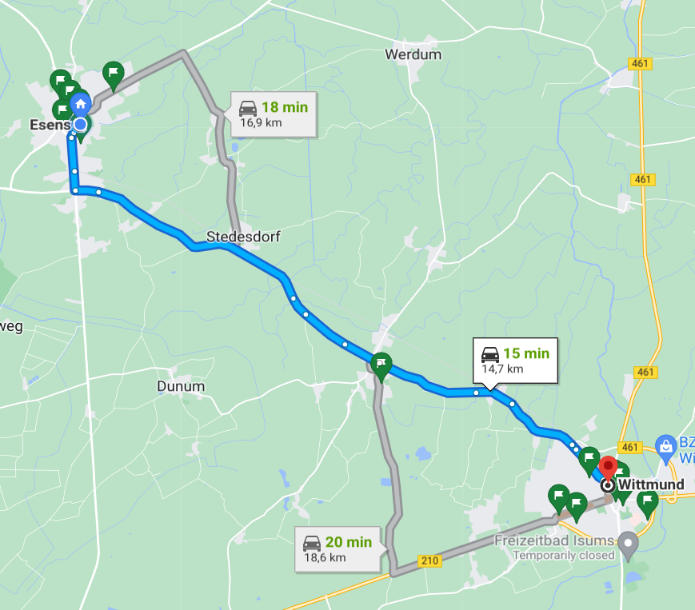

Preface
I'm living in Esens (Northern Saxony in Germany) and studying in Wittmund. I chose to commute by bicycle, every day during a working week. Here's my route:

That involved significant changes in my life, so in this article, I'm going to cover the following topics:
- Transportation – is it feasible to get from point A to point B on a bike in a predictable time?
- Weather – does it matter so much?
- Influence to the body what happens to you if you commute 30 km a day for 3 weeks?
Ok, let's move on.
Transportation
I could choose a train, at a first glance the time is almost the same:
- 45 minutes on the train (walk 15 minutes, then 15 minutes on the train, then walk 15-20 minutes again)
- 40-50 minutes or 1 hour on a bike;
There are a few concerns though regarding the time:
- On the way back the train departs at 12:40, and I finish studying at 12, so at that time I could be at home already if I take a bike.
- The winds influence the time, my negative record is 2 hours, and I felt exhausted after that.
The cost is not a concern for me, because if I take a train, I get compensated. The costs for bike maintenance are little. I was afraid of mechanical issues with the bike, none of them for 3 weeks though. Just clean and lube the chain, and pump the tires before the rides every week or so. A bonus number 1 is that you're not tied to the train's schedule, if you have to do anything in Wittmund it's not a problem, and you can leave any time on the bike. A bonus number 2 is that on the bike you can do more in Wittmund.
Walking and taking a train is a bit depressing for me, while on the bike the landscape is always different: the fog, the sunrise, etc. The ride depends on you and you are interacting with the world around you.
Weather
The first question all the cyclists get is: is the rain so important? Well, for three weeks I was under the rain once, but it was an ice rain. I could just wait for half an hour or an hour, but I decided to ride. It was cold, but I knew I could tolerate that for 1 hour. I got home, took a warm bath, and... nothing happened. The trick here is that it rains, but not the time I ride. Usually, it rains at night and that's fine for me.
But the winds are important. Now I have a singlespeed, so I can't switch the gear down. Sometimes I return fully exhausted after fighting with the wind. But the direction of the wind matters. Winds can be up to 95 km per hour, but strong winds blow only from the North. My destination is in the South, so I always come to my destination on time. On the way back I'm not in a hurry, I can walk. But the wind matters only in open spaces. For the whole distance, I have two such spaces about 800 m each. I see this as a challenge, and if you can tolerate the wind, you can tolerate a lot.
It wasn't cold, the lowest temperature is -2℃. Usually, it's above 0, so I put on my thermal T-shirt with a long sleeve and a windbreaker. At first, it's not comfortable, but then I warm up. When it's cold, I add a pullover and that's all.
Body
The study suggests that exercises can significantly lower your odds of getting sick from COVID-19.
The next is that when I ride in the morning, I awaken and get ready for intensive study. But in the long term, it's also energizing and raising the mood. More than that, it helps me to overcome other hard challenges. For example, I'm looking for a job now, and this involves writing a lot of cover letters and getting refused. That really can make anyone feel upset, so cycling helps a lot.
What nobody is saying about cycling is that when you stop you're feeling cold. At first, you feel hot, but then the body starts to cool down until you feel really cold if you don't dress up or grab a hot drink.
The body adopts if you cycle regularly and dress up properly: it almost stops sweating. I get a sweat on my back because I'm riding with a backpack. And a rack to hold this backpack is the next upgrade I'm going to make. Shoulders feel also uncomfortable because of that. Regarding muscles, especially those heavily involved in cycling, stretching and massage roller are your best friends and then you get no issues.
In the third week, I started to feel hungry. Like I'm eating my usual lunch and after that, I'm still hungry. It's normal, as I burn more calories. It's also better to eat more often.
Conclusions
Is it worth trying? Sure! Is it accurate in terms of time? Well, it depends, and sometimes it's not.
I'm not giving any advice here, just sharing some of my own experiences. Lots of advice from YouTube helped me though, including bike ergonomics, and eating (before/after/while cycling), but one piece of advice was outstanding. It was from a guy riding hundreds of kilometers. His video The Most Important Factor for Long Distance Rides/AUDAXs is great. And the advice is really simple: don't concentrate on the distance or on the time, just enjoy riding!
Comments